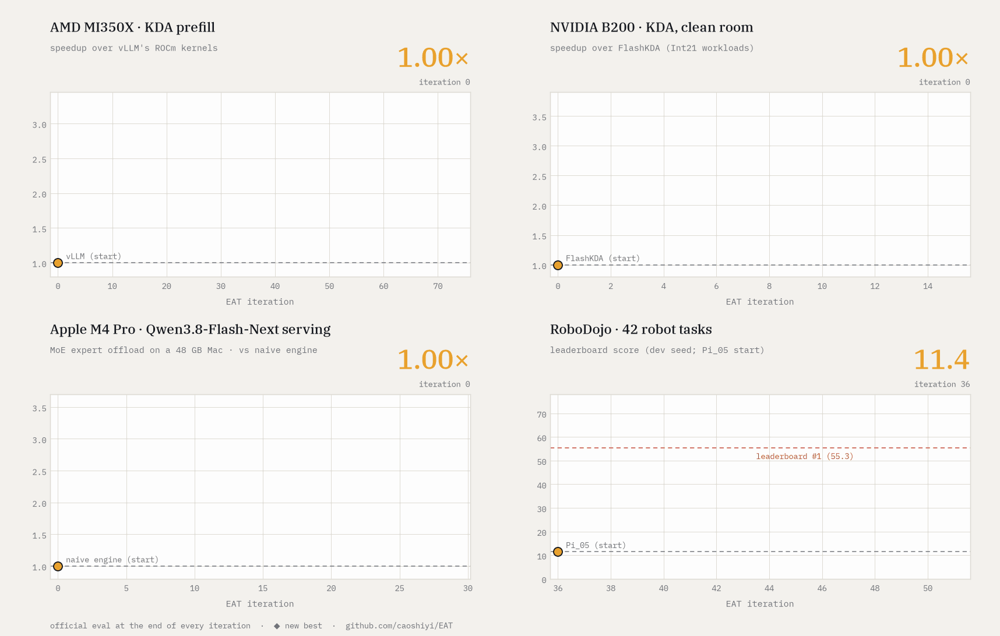
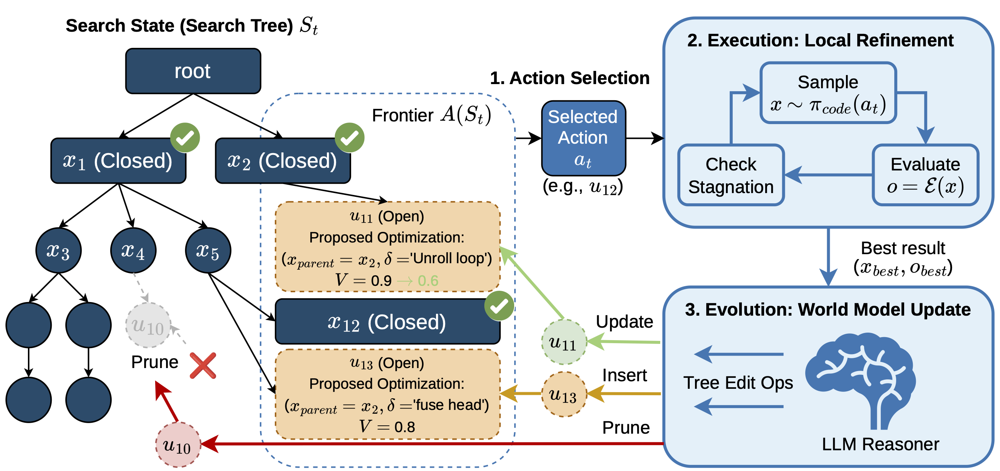
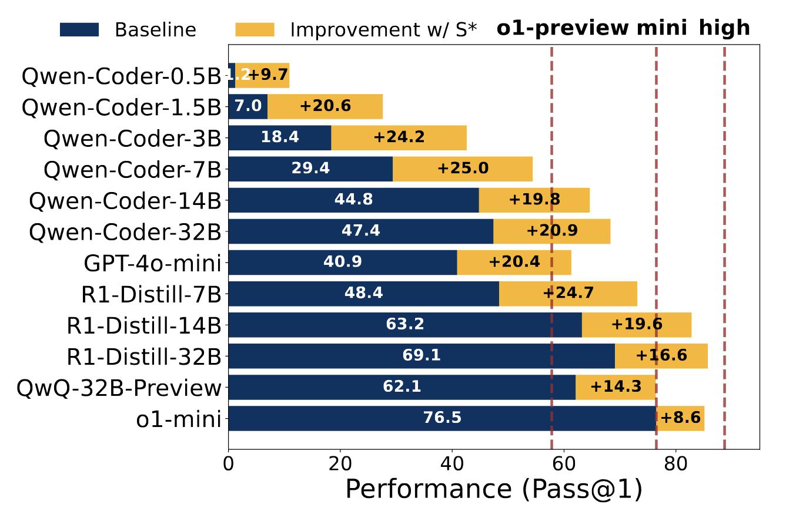
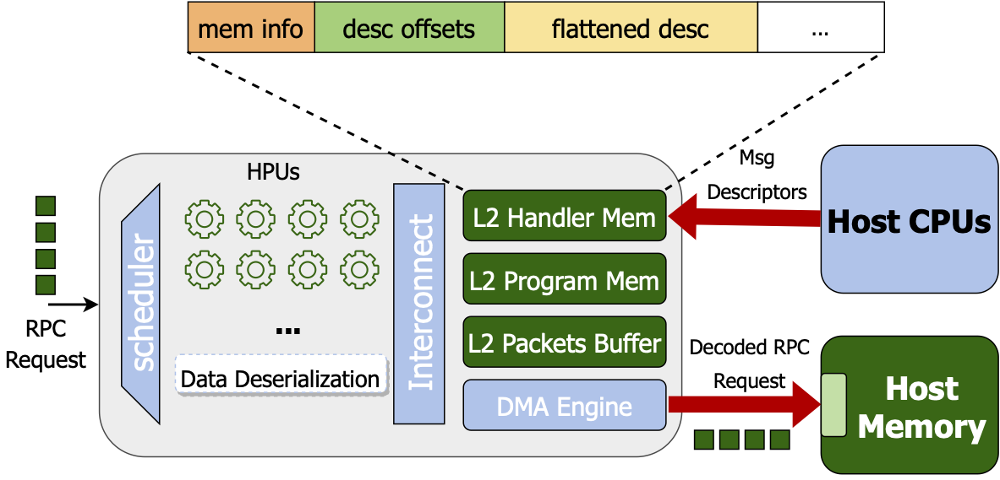
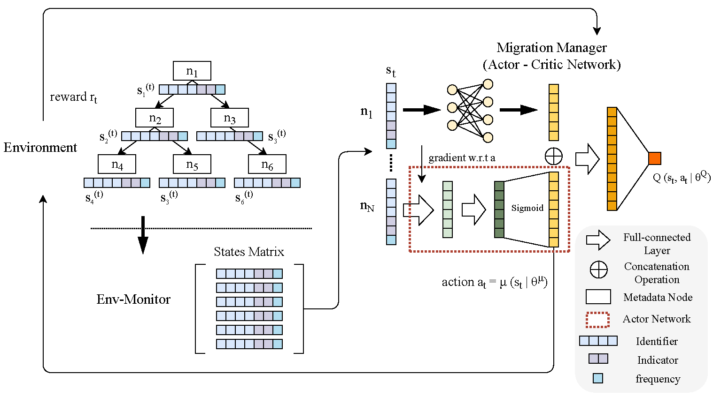

Toward self-improving AI systems
From human-engineered AI to AI-designed AI.
What does it take for AI to improve AI? Cheap compute to serve and train models and agents, capable models trained to perform complex real-world tasks, and autonomous agents that discover and learn from better solutions.
Hover a project to trace how it connects; click it for details.
AI Infrastructure
Efficient and scalable AI systems
Improve infrastructure
Faster kernels · Efficient rollouts · Better communication
Autonomous Optimization
Agents autonomously discovering and learning from better solutions
Improve training
Better training experiences · Training recipes
Projects I led or co-led, as first or co-first author.
Solid: completed work. Dashed: where I'm going next.
News
Oct '26
Excited to release Evolving Agent Teams (NeurIPS 2026)!
Feb '26
Excited to release K-Search for automated GPU kernel generation!
Oct '25
Excited to receive Amazon AI Fellowship!
Earlier highlights (5 more)Hide earlier highlights
May '25
Excited to announce the release of SkyRL, an RL framework for training Real-World Long-Horizon Agents!
Feb '25
Sky-T1 is featured in The New York Times, The Wall Street Journal, and The Information!
Oct '24
Two papers (MoE-Lightning and GraphPipe) are accepted at ASPLOS '25!
Oct '23
Released S-LoRA, a scalable system for serving thousands of LoRA adapters concurrently!
Aug '23
Graduated from ETH and joined UC Berkeley EECS!
Publications
Projects I led or co-led, grouped by research area.
Autonomous Optimization
Agents autonomously discovering and learning from better solutions

K-Search: LLM Kernel Generation via Co-Evolving Intrinsic World Model
arXiv preprint · 2026


Earlier work
Networking and distributed systems


Accelerating Data Serialization/Deserialization Protocols with In-Network Compute
Workshop on Exascale MPI, ExaMPI@SC 2022

AdaM: An Adaptive Fine-Grained Scheme for Distributed Metadata Management
International Conference on Parallel Processing (ICPP) 2019Talks
Invited talks & visits.
May '26
Invited talk at Recursive on self-improving agents for long-running optimization tasks (e.g., kernel generation).
May '26
Invited talk at the Hao AI Lab, UC San Diego, on K-Search.
Feb '26
Invited talk at the Jiaolab, UC Berkeley, hosted by Prof. Jiantao Jiao, on K-Search.
Feb '25
Invited talk at the SLICE Lab, UC Berkeley, hosted by Prof. Sophia Shao, on MoE-Lightning.
Feb '25
Invited talk at the SAMPL group, University of Washington, hosted by Zihao Ye, on MoE-Lightning and Sky-T1.
Blog
All posts →No posts yet.